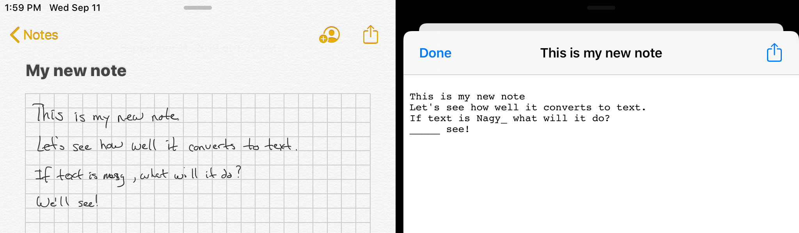
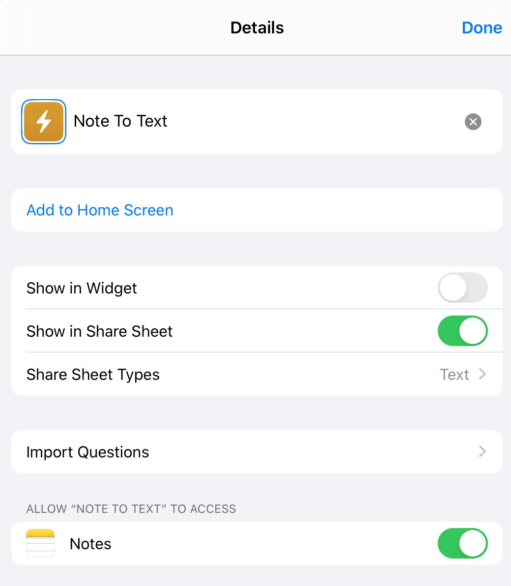
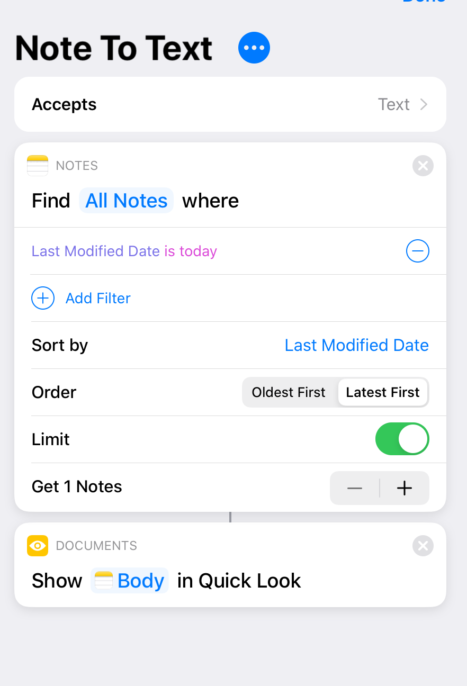

I use Apple Notes for all my note taking. There are many note taking applications out there for Mac/iOS and while Apple Notes may not be the best, the price is right (free), it syncs with all of my Apple devices - MacBook, iPad, and iPhone (sometimes the sync fails in frustrating ways), and it nicely integrates with the Apple Pencil on my iPad. I do a lot of note taking with the pencil and handwriting, because I find that’s a very fast way for me to get things down. Apple Notes, behind the scenes, converts the handwriting into text, but aside for the note title you do not see any of that conversion. The text is there, though, as it is used when you search for notes. I would, however, like to have access to the full converted text.
My use case is sometimes I need to share notes with other people. I really don’t want them to have to read my handwriting, so plain text is ideal. There are applications that do real time conversion of handwriting into text; Nebo being a great example. But in this case I want to do the conversion after the fact and from an Apple Note, not a Nebo note (I don’t keep notes in Nebo). I had been looking for a way to do this conversion. There are plenty of for fee online conversion services in the cloud and they all seem expensive. There is an iOS App that claims to do handwriting conversion from scanned documents, but that did not work well with PDF files made from Notes. It looked like I was out of luck.
It turns out, Apple Notes can make the converted text available on the iPad (and likly the iPhone, but I haven’t tried that) if you do some work and use the Shortcuts app that comes with the iOS. At the time of this post I’m using the iPadOS 13 beta. I don’t know if these functions are in iOS 12 (they may be), so you may need to wait for the rollout of iPadOS if you don’t want to try the beta. Here are the steps to run on the iPad to set things up,
- Start up the Shortcuts app and create a new blank short cut (I called mine “Note to text”)
- See the picture for the details pane (get to this by tapping the three dots next to the shortcut name).  Note that I specified that the shortcut show up on the sharing sheet for text. I did this so I would not have to leave the Notes App if I wanted to convert a note. You may or may not want to do this, as the shortcut will show up for the sharing sheets in other apps where it is not applicable. There is no “note” type, so “text” is the closest thing.
- Add code as per 
There is no way (that I know of) to pass a note into a shortcut. The shortcut accepts text as input so that it can be on a sharing sheet, but otherwise ignores that input. The only way to get a note object is to run
Notes::Find. Here, I just get the note I updated most recently, which presumedly is the one I’m working on. Would be nicer to be able to pass in the note you want to convert, but shortcuts can’t do this. Maybe someday. The next step is to display the text of the body (e.g. the conversion) as a Quick Look document. I find that to be convenient as I can copy it if I want.
Here is a movie of the shortcut in action (skip to about 29 seconds if you want to skip watching me write the note)
Here’s a screenshot of the note with its translation. You can see it does an ok job. Underscores indicate where the conversion is confused. I can then fixup the handwriting to make the conversion better.